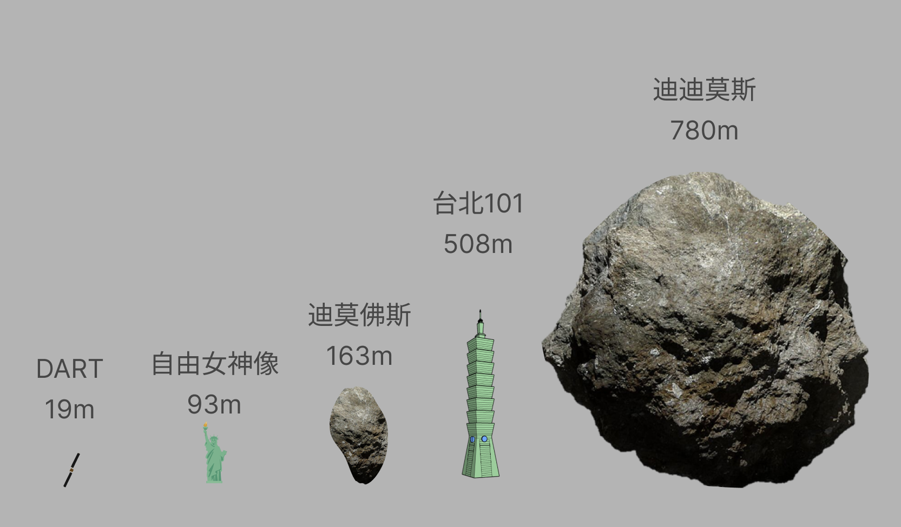
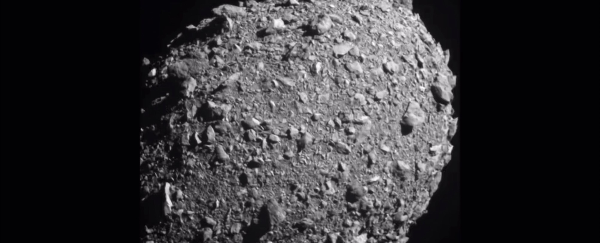
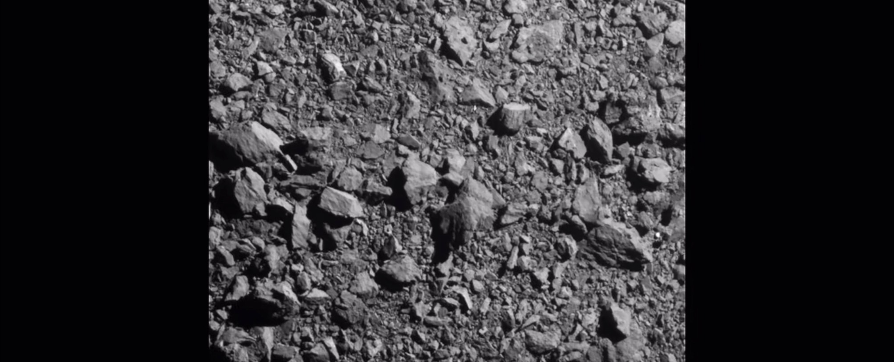
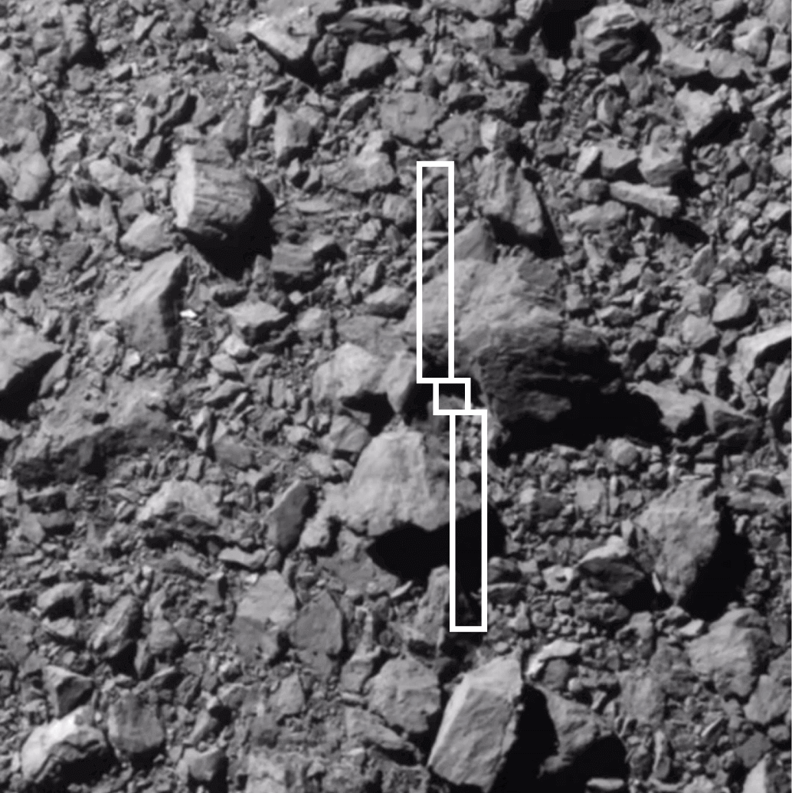
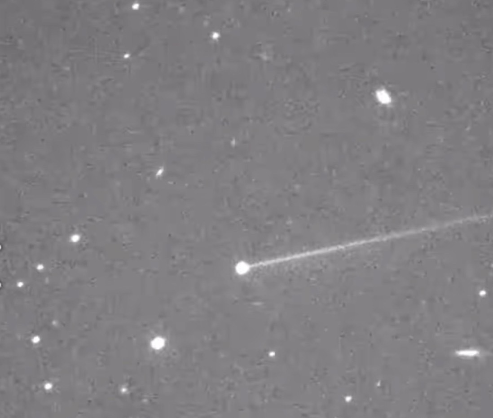

計畫實施
DART的航天器主要由兩個部分組成，撞擊小行星的主體為成本較低的航天器，主體的結構尺寸為1.2*1.3*1.3公尺，展開太陽板後，長度可高達17公尺。
而另外一部分就是有一顆名為LICIA Cube的衛星，將在撞擊前15天與主體分離，主要作用為捕捉撞擊瞬間和撞擊後產生噴射物的圖像。
以下為搭載在撞擊器上的攝像頭，捕捉到的撞擊畫面截圖 :


最後面會一片紅是因為影片是通過數據計算一行一行回傳到地球上的，所以計畫成功，航天器成功撞擊小行星，信號因此中斷。
此圖為預估航天器撞擊小行星的狀況 ( 打擊點 ) :
以下為撞擊2個月後在新墨西哥拍攝到的畫面:
可以看見碰撞產生的濺射物拉出了一條很長的尾巴，過了2個月後依舊清晰可見。